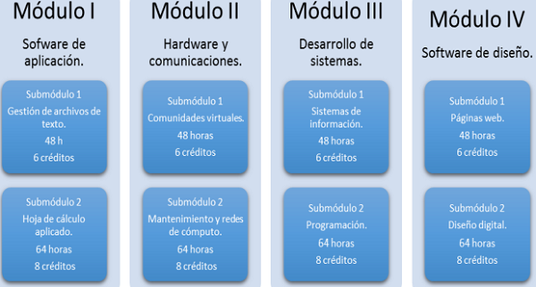
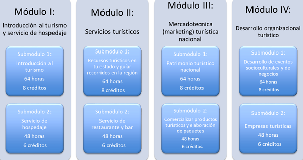
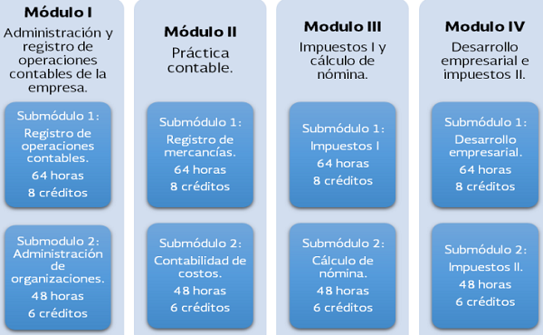
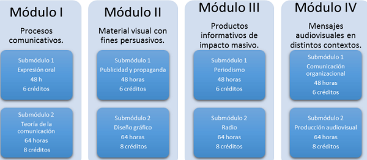
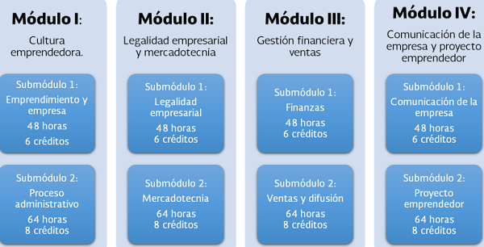

En esta capacitación se "busca desarrollar en el alumno las competencias profesionales en las áreas de aplicaciones de oficina, los elementos de hardaware, las comunicaciones mediante las redes informáticas, el desarrollo de sistemas y el software de diseño" TIC's

Capacitación en TIC
Turismo
En esta capacitación se "valora la importancia del sector urístico a nivel nacional e internacional, reconociendo los servicios turíosticos, el patrimonio cultural y su ubicación geográfica, a través del reconocimiento del marco legal, los diferentes tipos de alojamiento, el servicio de restaurante y bar, y el desarrollo de negocios con potencial turístico" Turismo

Capacitación en Turismo
Contabilidad
En esta capacitación se "favorece el desempeño de las habilidades en clasificación de entidades económicas, registros contables, elaboración de estados financieros, cálculo de costos, gastos, nómina, contribuciones y el desarrollo del plan de negocios que le permitan desempeñarse en una actividad laboral como auxiliar contable y administrativo" Contabilidad

Capacitación en Contabilidad
Comunicación
En esta capacitación se posibilita "descubrir habilidades comunicativas de forma informada y asertiva para concretar productos diversos como: textos, discursos, gráficos y audiovisuales innovadores con impacto masivo que alcancen expectativas de un posible cliente u organización" Comunicación

Capacitación en Comunicación
Administración
Las personas egresadas de esta capacitación "se pueden integrar a la vida laboral tanto en instituciones públicas como privadas en los siguientes perfiles ocupacionales: auxiliar administrativo, aistente de investigación, encuesta-entrevista, ventas y servicios financieros, analista de relaciones públicas y comunicación" Administración

Capacitación en Administración